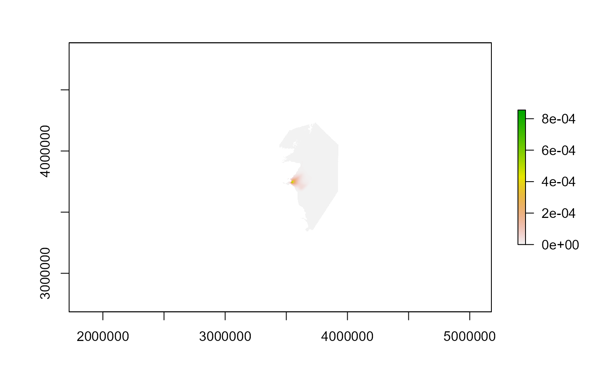

Load example seabird-distribution raster data
Source:R/functions-get_examples.R
get_example_brddata.RdReconstructs and returns the seabird-distribution raster used by the selected example workflow.
Value
A raster::RasterLayer object containing example seabird-distribution data with the appropriate dimensions, extent, coordinate reference system, and layer name.
Details
The raster is reconstructed from data stored internally as separate metadata and cell-value objects.
For the standard example, the returned layer is named "Forth.Islands".
For the distance-decay example, it is named "Whinnyfold".
The returned raster can be supplied as the BrdData argument to
seabord().
See the package input vignette for an example:
vignette("C_seabord_inputs", package = "seabORD").
Examples
# Load the standard example bird-density raster
BrdData <- get_example_brddata()
# Load the distance-decay example
BrdData_dd <- get_example_brddata("dd")
# Plot the raster
raster::plot(BrdData)
